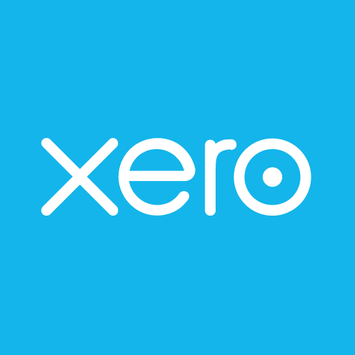
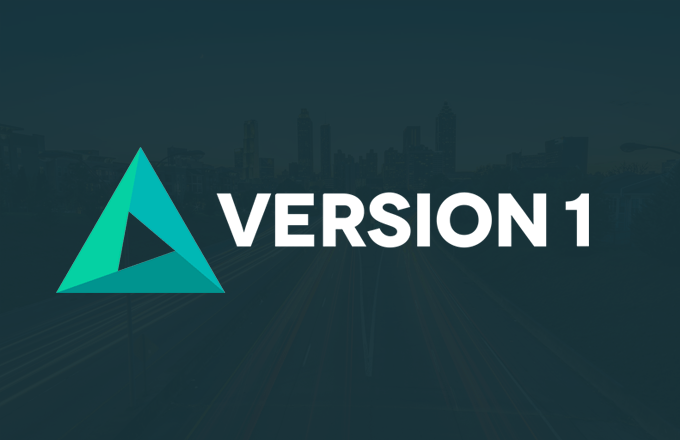

Contact Information
Skills
- C#, .NET Core, .NET Framework
- React.js, Redux, Typescript
- Kotlin, Teamcity, Github Actions
- VS Code, Visual Studio, Docker, AWS CLI
- SQL, JIRA, Confluence, Sumo Logic
- JQuery, Angular.js, Razor Markup, CSS
Education
Higher Diploma in Software Development
Dublin Business School, Dublin, Ireland (1.1 Hons)
Masters in Musicology
Maynooth University, Maynooth, Co. Kildare, Ireland (2.1 Hons)
Bachelor of Music
Maynooth University, Maynooth, Co. Kildare, Ireland (1.1 Hons)
Work Experience
Xero: Senior Software Engineer
October 2018-Present 📍 Auckland, New Zealand & Sydney, Australia
Projects
Access Management & Permissions
- Writing solutions to help users in accounting practice manage access and grant permissions.
- Working with code across multiple systems including legacy monolith and microservices.
Timesheets
- Writing solutions to help employees submit timesheets and Payroll admins pay employees correctly.
- Modernisation and compliance project to comply with AU Fair Working legislature.
- Worked with legacy monolith (MVC with .NET Framework) and multiple legacy front ends (Knockout, Durandal, Ext.js) as well as .NET Core/React.js project (with Redux).
- Uplifting components from .NET Framework to .NET Core.
- Uplifting legacy (ClickOps) pipelines to seamless CI/CD pipelines using Kotlin and Teamcity.
Responsibilities
- Designing, refining, implementing, testing, deploying, and monitoring end-to-end solutions.
- Participating in PR reviews.
- Working with stakeholders to align on deadlines for completion of work.
- Collaborating cross-functionally with UX designers, product owners, and engineers to improve customer experiences.
- On-call: responsible for running multiple services outside working hours and fixing issues as they arise.
- Technical interviewing panel: interviewing new candidates for Xero for both technical and team fit interviews.
- Grad buddy: onboarding, mentoring, and helping graduates with professional goals and development.

Version1: Software Developer
June 2016-September 2018 📍 Dublin, Ireland & Kent, England
Projects
Waste Data Capture
- Developed a system for tracking waste in a paper-making factory.
- Migration from VB6 to ASP.NET MVC.
Paper Management System
- Inventory system for paper factory workers.
- Migration from VB6 to ASP.NET MVC.
- First exposure to concurrency issues.
Responsibilities
- Implementing and testing solutions, collaborating with teams.
- Involvement in Diversity and Women's reBOOT programs.
- Onboarding and mentoring new graduates.
